26/07/2021 – Atualizada em 25/08/2021
Numa parceria da ABRAPESP e o Canal Papo de PE, programa do canal foi ao ar diariamente as 16 horas, produzido por sócios da ABRAPESP. Agora nas paralimpiadas, o programa continua, mas para assistir ao vivo acompanhe aqui e nas redes sociais os horários e convidados
Clique na imagem do programa e assista
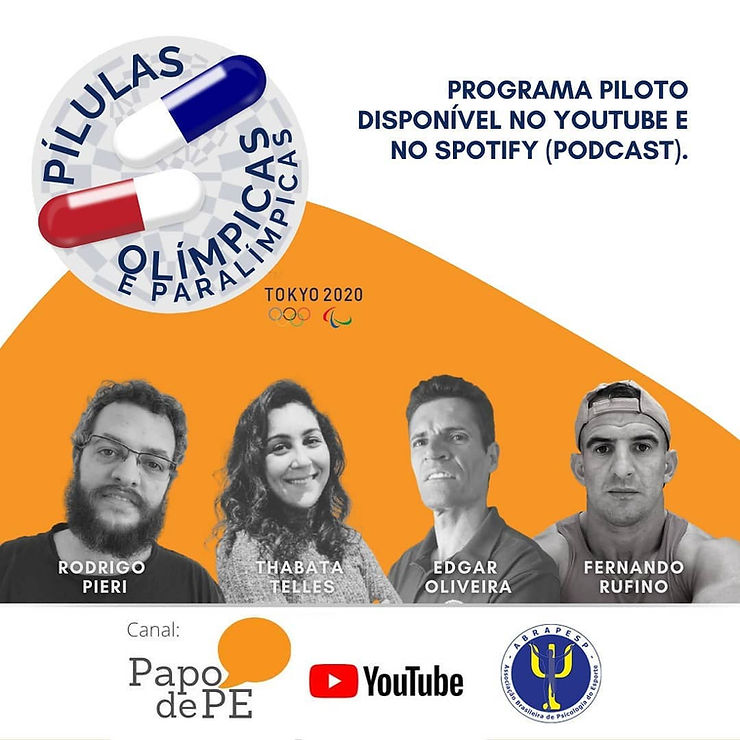
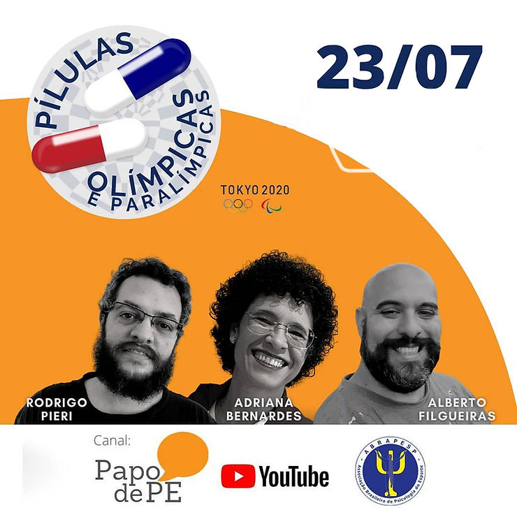
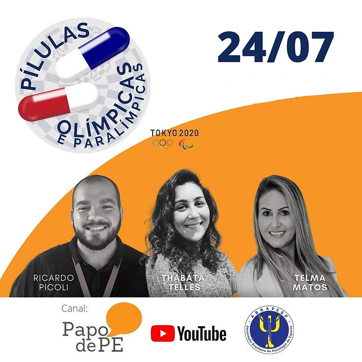
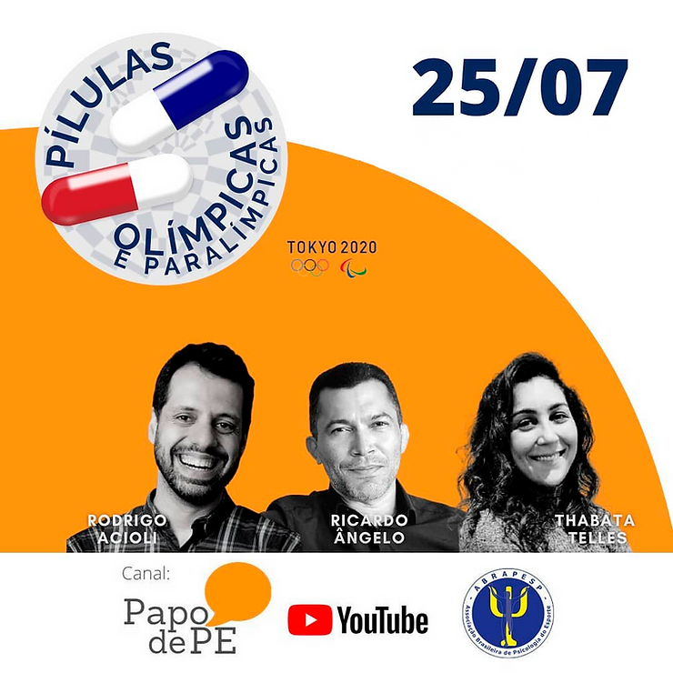
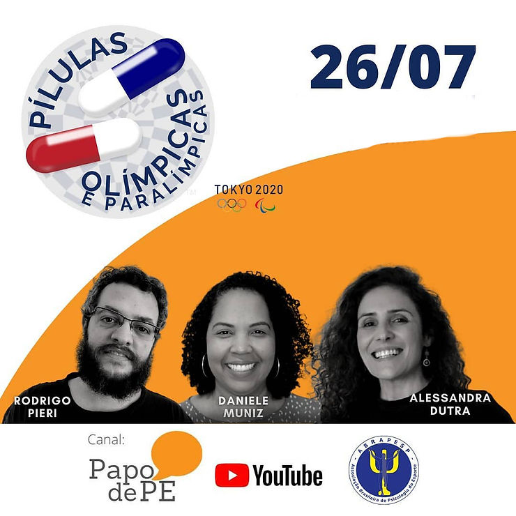
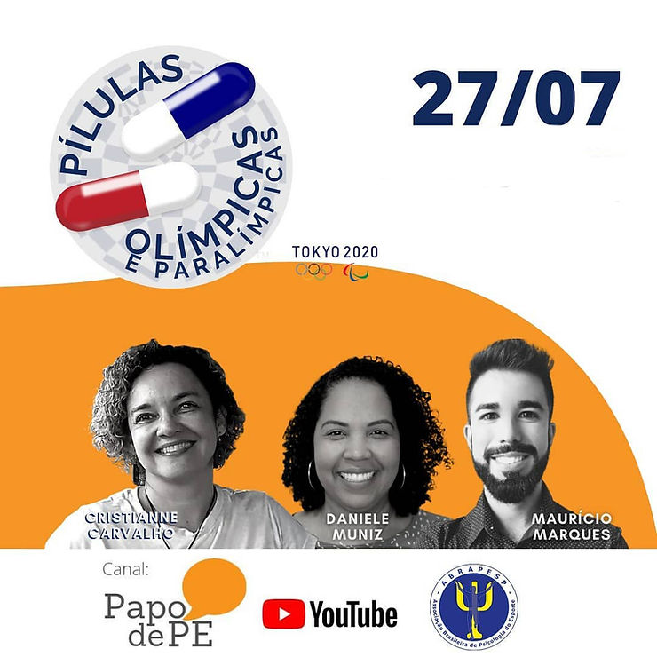
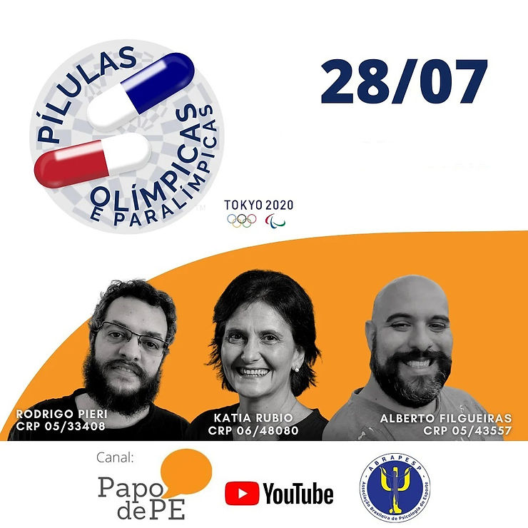
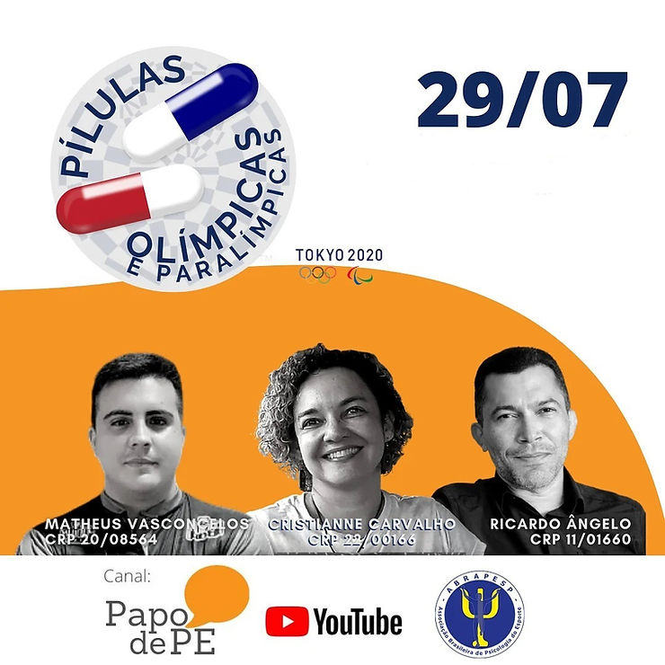
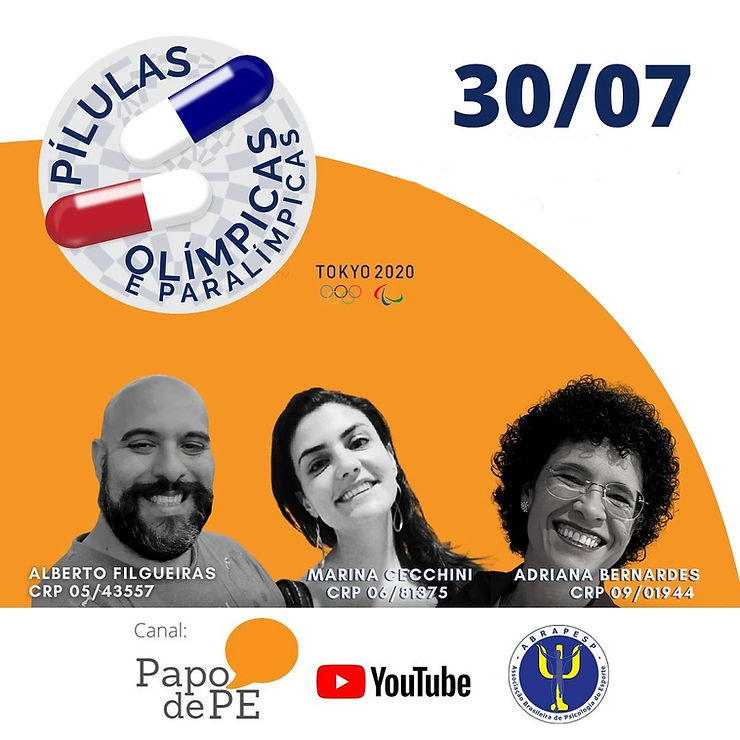
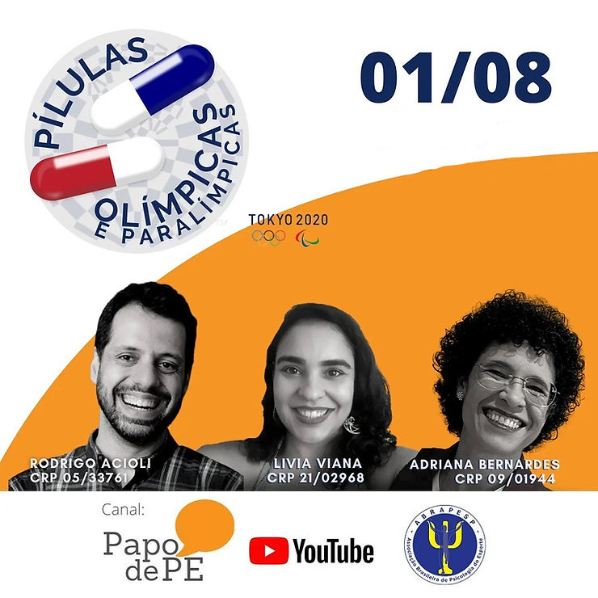
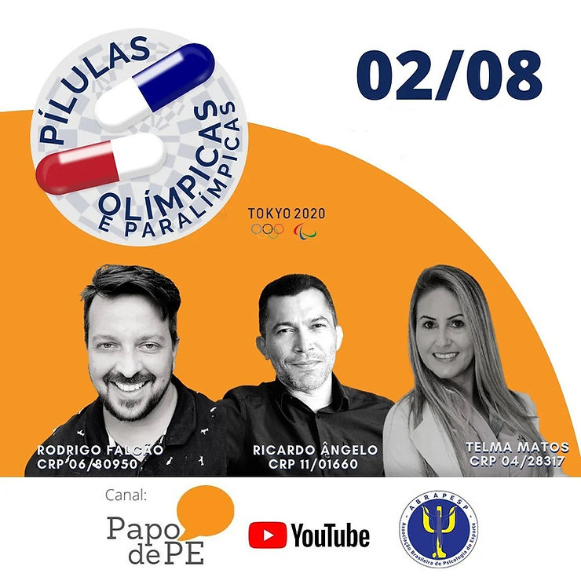
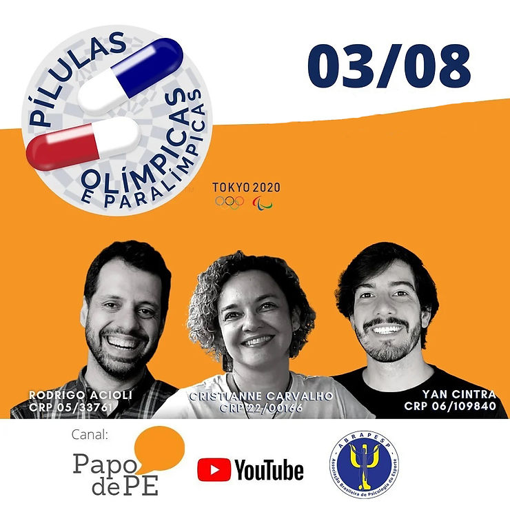
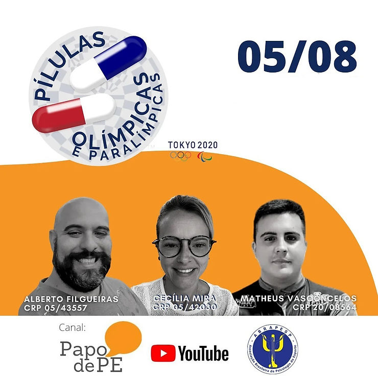
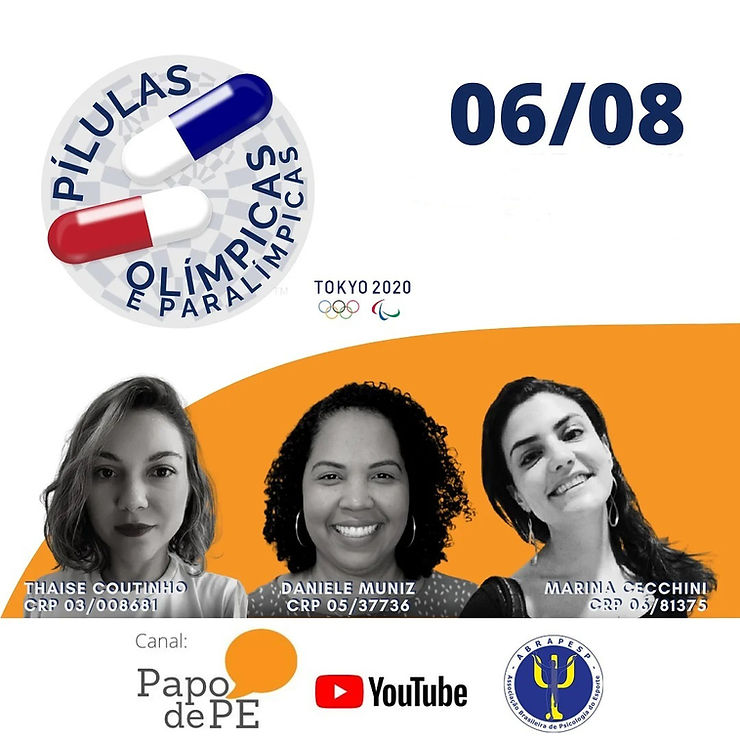
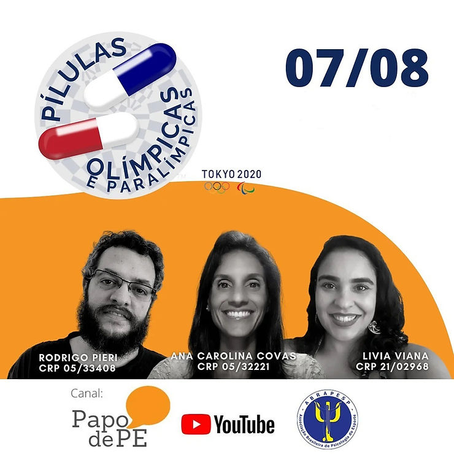
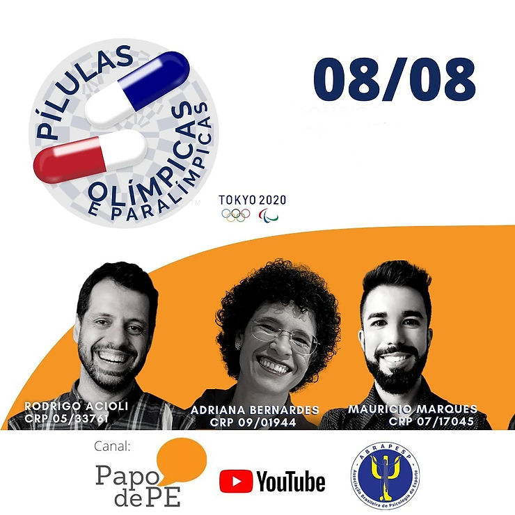
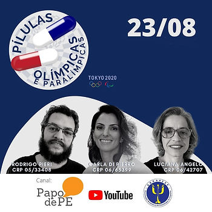
Com a abertura dos jogos paralímpicos, no dia 24/08, programa voltou ao ar com o “aquecimento” no dia 23 de agosto as 16:30, com Rodrigo Pieri no comando, Carla de Pierro contando as experiências em Tóquio e Luciana Angelo representando a ABRAPESP e comentando a repercussão.
O primeiro programa oficial na nova série foi ao ar, no dia 24/08 as 12:30, clique na imagem e acesse o link
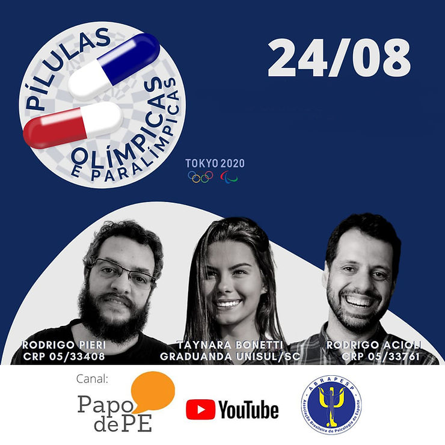
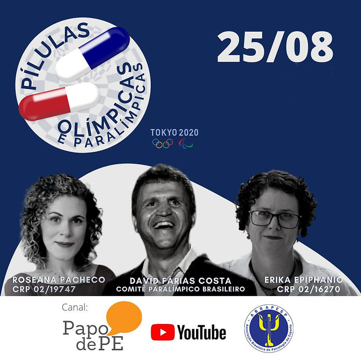
Você quer participar? Se você é sócio e estiver em dia com a associação, é só falar com a gente. A equipe de comunicação agenda o dia e a hora da sua participação, ao vivo, no programa. A gravação em vídeo fica disponível no canal do Papo de PE, no YouTube e o áudio em podcast nos principais canais. Participe.
Envie uma mensagem para comunicacao@abrapesp.org.br – com seu nome completo e telefone de contato.
Não sabe qual o caminho para tornar-se sócio? Clique aqui e siga o passo a passo